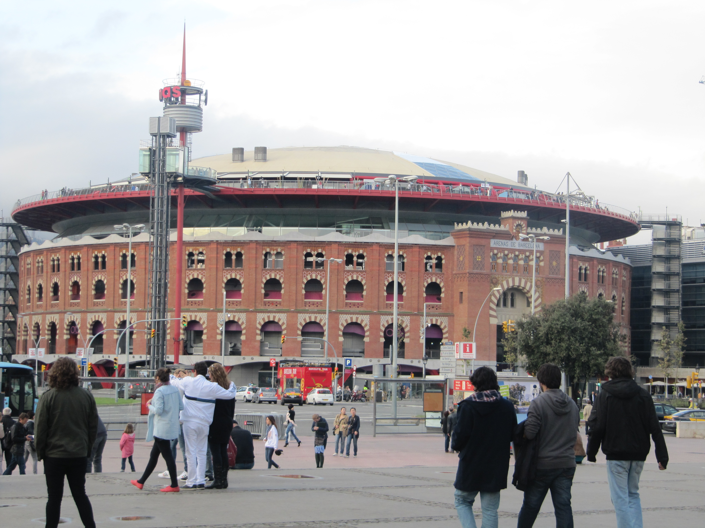

"West Side"
Ett unikt upplevelsepaket som jag i högsta grad kan rekomendera till besökare i alla åldrar är att spendera en heldag i den västra delen av Barcelona. Med den västra delen av staden, innefattas ett flertal mindre attraktioner. Som tillsammans enkelt fyller en heldag av sevärdheter. Platsen för dessa upplevelser heter Placa Espanya. Det är något ni sannerligen inte kommer att ångra!

Väl på plats hittar du till exempel det fem våningar höga nöjescentret med allt från bio och mat till shopping och utställningar.
Det som gör hela upplevelsen till något extra är att byggnaden tidigare tjänat som en av Spaniens största tjurfäktningsarenor!
På toppen av den forna arenan kan du nu istället avnjuta en fantastisk utsikt på någon av de fina restauranger som ligger där.
Ytterligare en sevärdhet som inte får missas är den mytomspunna Fuente de Magique, eller Den Magiska Fontänen.
Fontänen är belägen vid foten av de mäktiga trapporna som leder till Nationalmuseet, och sedan vidare upp mot den olympiska stadion (som ytterligare är intressanta besök!).
Fontänen har fått sitt namn från den vattenshow som uppvisas i takt till musik med teman från olika epoker.